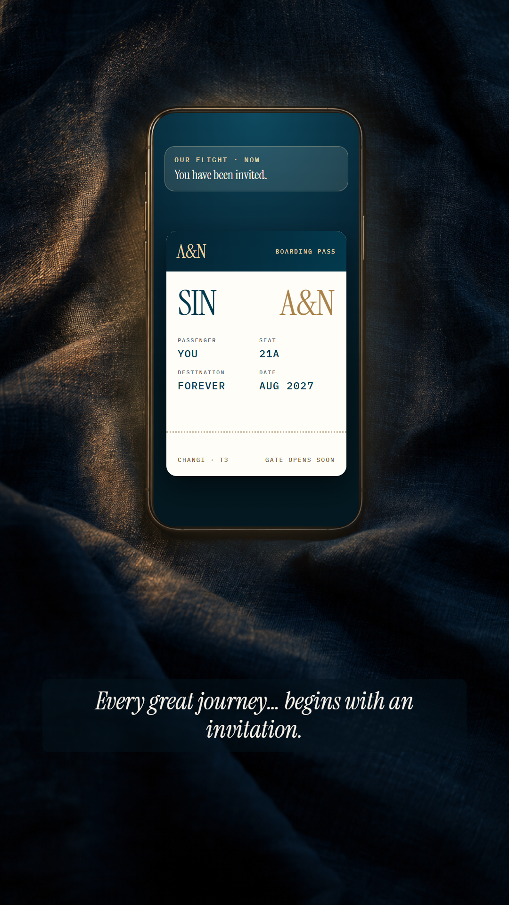
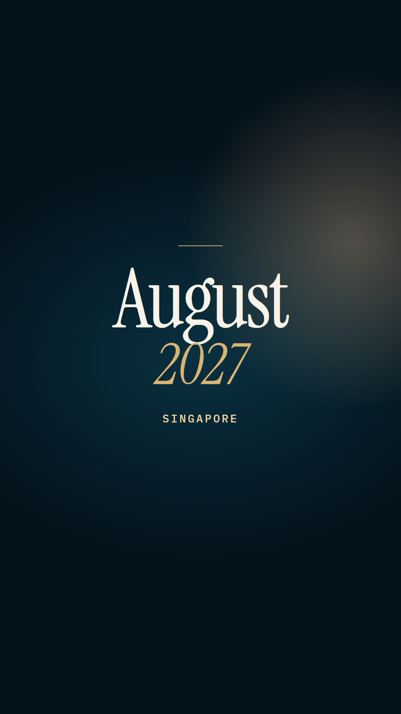
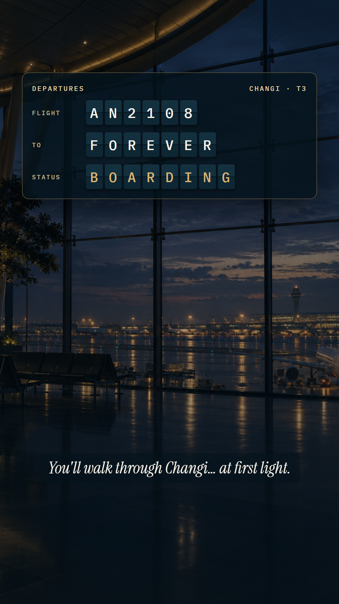
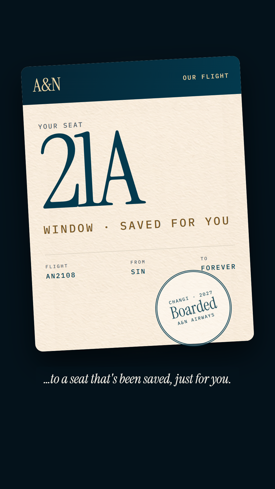
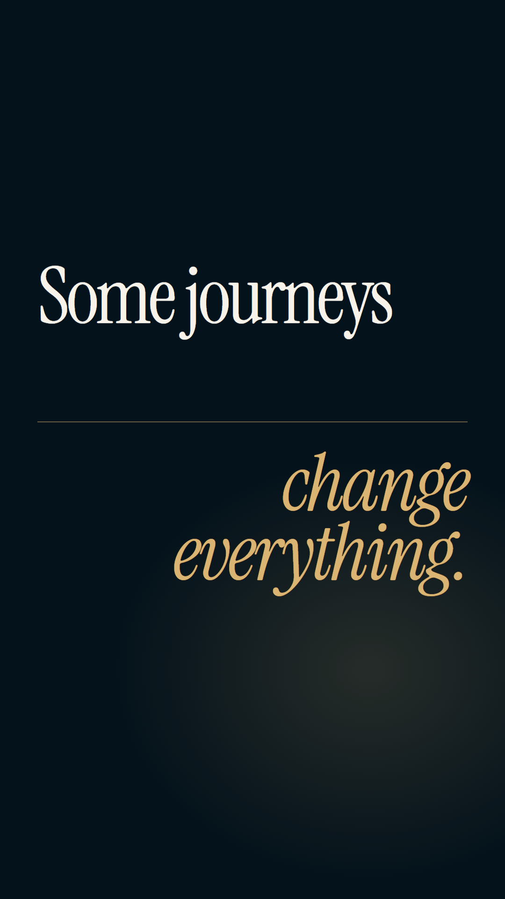
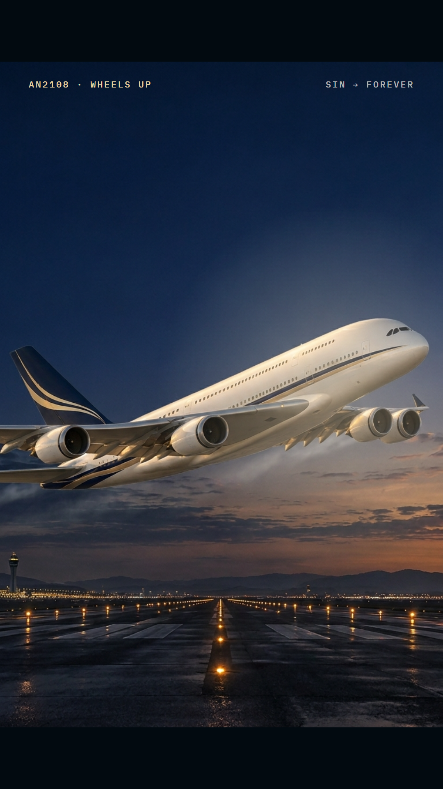
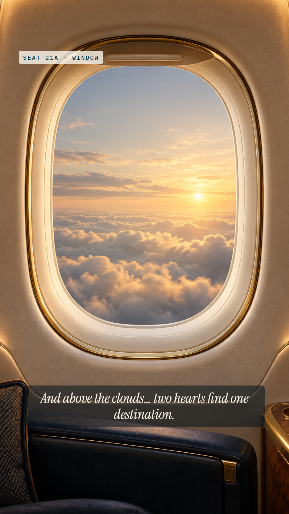
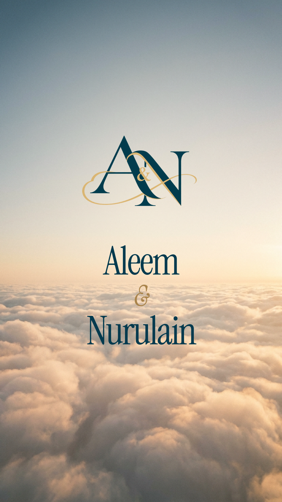
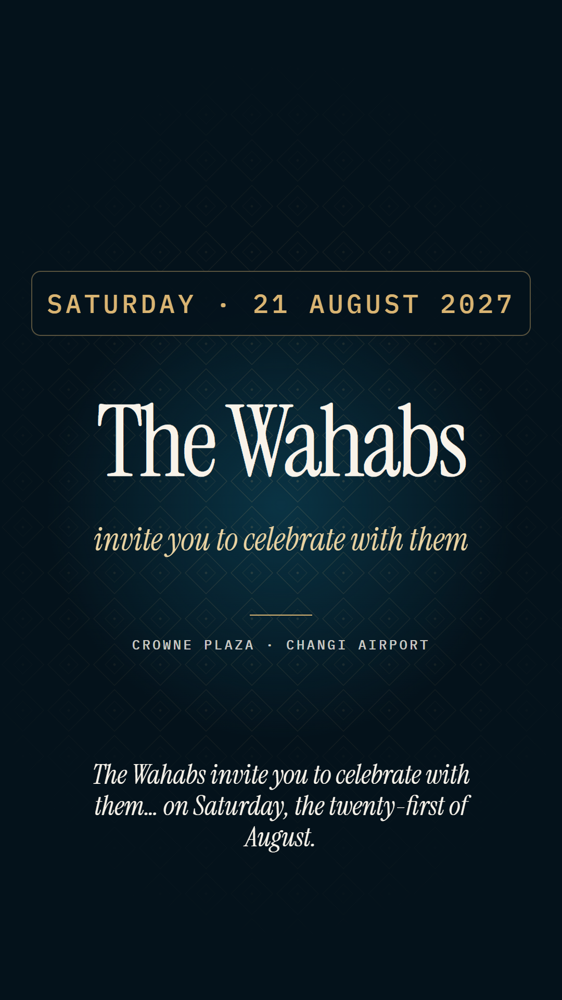
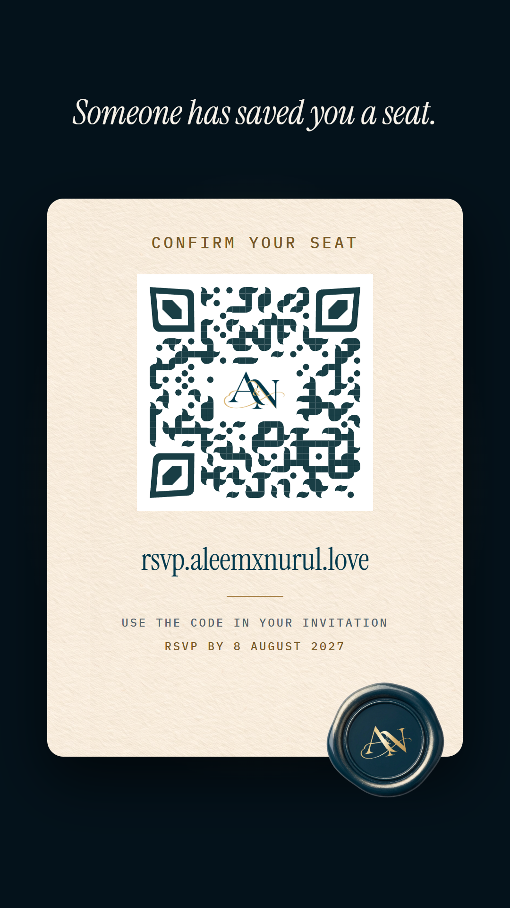

Vertical 1080×1920 · about 62s · cut to "Untamable Love" on bar lines (112.3 BPM). Shown: the English, 21 August cut. In the 22 August cut, frame 09 reads "Sunday · 22 August 2027 / The Jamals". Real footage (Veo) replaces stills 03, 06, 07 and 08 in the build; motion arrives in the build pass.

A phone glows on navy linen; the A&N boarding pass blooms onto its screen. VO: "Every great journey… begins with an invitation."

First downbeat. "August 2027 · Singapore" lands with a light leak.

Dawn glide through Changi; the departures board rolls AN2108 · AN2208 → FOREVER · BOARDING. VO: "You'll walk through Changi… at first light."

Close-up on 21A pulling back to the cotton-paper pass; the BOARDED stamp lands on the bar. VO: "…to a seat that's been saved, just for you."

Two title cards on two bars. VO: "Some journeys… change everything." The music's rise begins.

The A&N airliner roars off the runway; wheels up on the climax at 32.15s, with a gold flash and a letterbox breathe. No words.

Push into seat 21A's window as golden clouds part. VO: "And above the clouds… two hearts find one destination."

Golden-hour sky; the monogram blooms, then Aleem & Nurulain. VO: "Aleem… and Nurulain."

The board flips to the guest's day, then the host family and venue. The 21st cut reads "The Wahabs"; the 22nd reads "The Jamals".

"Someone has saved you a seat." Card: Confirm your seat · QR · rsvp.aleemxnurul.love · code reminder · RSVP by 8 August 2027 · the wax seal presses on.
Same two lines in each voice, English then Bahasa Melayu. Pick one, or name a mix (e.g. one voice for English, another for Malay).